1060E10 pressure pump - r r
- Path
- Procedures > 10 ENGINE > 1060 DIESEL FUEL INJECTION > 1060E diesel pressure pump > 1060E10 pressure pump - r r
- Kind
- repair procedure (removal / refitting; the operation number is the code)
- Applies to
- engines: 1.9 JTD 8v , 1.9 JTD 16v, 2.4 JTD 10v, 2.4 JTD 20v; all production periods
- Interactive page
- https://sloeber94.github.io/elrnDB-a156/en/#/3237795
Applies to: engines: 1.9 JTD 8v ; all production periods
 Removing
Removing
 Refitting
Refitting1008C10 power unit upper reaction link r r
1016A10 sound-proofing cover - r + r .
1008C14 engine link bracket - r r
4450B10 Front WHEEL (one) - R.R.
7055B64 Engine compartment DUST shield in front wheel arch (one), left or right - R.R.
1092G10 single engine belt r r
1092A12 crankshaft pulley - r+r for versions with air conditioner
1084A16 oil dip stick pipe - r r
1060E30 pressure pump pulley - r r
1. Disconnect the electrical connection for the timing sensor.
 | Name | Connector |
|---|---|---|
1 | Timing sensor |
2. Disconnect the electrical connection from the fuel temperature sensor.
| Name | Connector |
|---|---|---|
2 | Fuel temperature sensor |
3. Disconnect the electrical connection from the pressure regulator on the pressure pump.
| Name | Connector |
|---|---|---|
3 | Fuel pressure regulator |
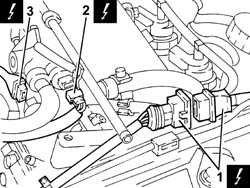
Applies to: engines: 1.9 JTD 8v ; all production periods
1. Disconnect the electrical connection from the excess pressure sensor.
| Name | Connector |
|---|---|---|
1 | Turbocharging sensor |
2. Disconnect the electrical connection from the E.G.R. valve.
| Name | Connector |
|---|---|---|
2 | EGR solenoid |
3. Disconnect the electrical connection from the thermal switch for the fuel heater.
| Name | Connector |
|---|---|---|
3 | Diesel heater resistance |
4. Disconnect the electrical connection from the fuel heater.
| Name | Connector |
|---|---|---|
4 | Diesel heater resistance |
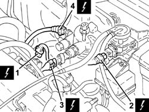
Applies to: engines: 1.9 JTD 8v ; all production periods
1. Disconnect the inlet pipe from the injectors from the fuel return manifold pipe
2. Disconnect the fuel return pipe from the pressure pump from the fuel return manifold pipe.
3. Undo bolts (3a) and move fuel return manifold pipe (3b) aside.
4. Disconnect the fuel inlet pipe from the pressure pump.
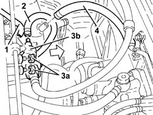
Applies to: engines: 1.9 JTD 8v ; all production periods
1. Undo the manifold side connector for the pipe from the pressure pump to the fuel manifold using a suitable spanner.
2. Disconnect the pressure pump side connector from the pipe leading from the pressure pump to the fuel manifold using a suitable commercial wrench.
3. Remove the pipe from the pressure pump to the fuel manifold.
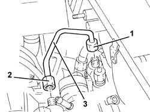
Applies to: engines: 1.9 JTD 8v ; all production periods
1. Undo nuts (1a) and move fuel filter assembly (1b).
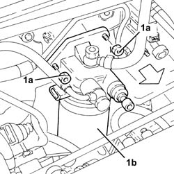
Applies to: engines: 1.9 JTD 8v ; all production periods
1. Undo nuts (1a) and remove pressure pump (1b).
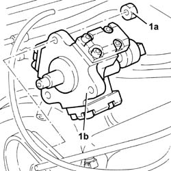
Applies to: engines: 1.9 JTD 8v ; all production periods
Refitting
RemovingFit the pressure pump and tighten the nuts to the specified torque.
 | Fastening | Component | Ø | Value (daNm) |
|---|---|---|---|---|
- | Nut | PRESSURE PUMP | M8 | 2.6 - 3.2 |
Replace the fuel filter assembly in its housing and secure with nuts.
1. Place the pipe from the pressure pump to the single fuel manifold back in its housing and fix it using the connectors without tightening them.
2. Tighten the connector for the pipe from the pressure pump to the fuel manifold, pump side, to the recommended torque using a suitable spanner.
| Fastening | Component | Ø | Value (daNm) |
|---|---|---|---|---|
2 | Connector | PRESSURE PUMP LINE TO FUEL MANIFOLD | M12 | (Pressure pump side) 2.2 |
3. Tighten the connector for the pipe from the pressure pump to the fuel manifold, manifold side, to the recommended torque using a suitable tool
| Fastening | Component | Ø | Value (daNm) |
|---|---|---|---|---|
3 | Connector | PRESSURE PUMP LINE TO FUEL MANIFOLD | M14 | (Fuel manifold side) 2.2 |
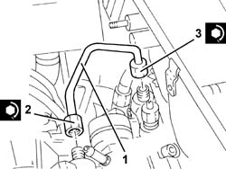
Applies to: engines: 1.9 JTD 8v ; all production periods
Connect the fuel inlet pipe to the pressure pump.
Place the fuel return manifold pipe back in its housing and secure it using the bolts.
Connect the return pipe from the pressure pump to the fuel return manifold pipe.
Connect the injector return pipe to the fuel return manifold pipe.
Connect the electrical connection to the fuel heater.
Connect the electrical connection to the thermal switch for the fuel heater.
Connect the electrical connection to the E.G.R. valve.
Connect the electrical connection to the excess pressure sensor.
Connect the electrical connection to the pressure regulator to the pressure pump.
Connect the electrical connection to the fuel temperature sensor.
Connect the timing sensor electrical connection.
1060E30 pressure pump pulley - r r
1084A16 oil dip stick pipe - r r
1092A12 crankshaft pulley - r+r for versions with air conditioner
1092G10 single engine belt r r
7055B64 Engine compartment DUST shield in front wheel arch (one), left or right - R.R.
4450B10 Front WHEEL (one) - R.R.
1008C14 engine link bracket - r r
Applies to: engines: 2.4 JTD 10v; all production periods
Removing
Refitting4450B10 Front WHEEL (one) - R.R.
7055B64 Engine compartment DUST shield in front wheel arch (one), left or right - R.R.
1092G10 single engine belt r r
1092A12 crankshaft pulley - r+r for versions with air conditioner
1032D12 timing system protective cover(s) - r + r
1008C10 power unit upper reaction link r r .
1016A10 sound-proofing cover - r + r .
1008C14 engine link bracket - r r
1060E30 pressure pump pulley - r r
Make sure that the ignition is OFF (STOP position), then disconnect the negative battery terminal (refer to op. 5530B10 battery - r+r ).
| Name | Connector |
|---|---|---|
- | Battery |
1. Loosen nuts (1a) and take off E.G.R. solenoid (1b).
2. Disconnect the electrical connection from the fuel temperature sensor.
| Name | Connector |
|---|---|---|
2 | Fuel temperature sensor |
3. Disconnect the fuel return pipe for lubricating the injectors from the fuel return manifold.
4. Disconnect the fuel outlet pipe from the pressure pump.
5. Unscrew bolts (5a) and take off fuel return manifold ( 5b).
6. Disconnect the fuel inlet pipe from the pressure pump.
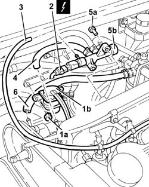
Applies to: engines: 2.4 JTD 10v; all production periods
1. Disconnect the electrical connection from the fuel pressure regulator.
| Name | Connector |
|---|---|---|
1 | Fuel pressure regulator |
2. Loosen the manifold side connector for the supply pipe from the pressure pump to the manifold using a suitable spanner.
3. Disconnect the pressure pump side connector from the pipe leading from the pressure pump using a suitable spanner.
4. Remove the fuel supply pipe from the single fuel manifold pipe.
5. Unscrew nuts (5a) and remove pressure pump (5b).
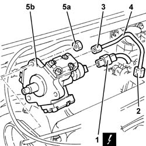
Applies to: engines: 2.4 JTD 10v; all production periods
Refitting
Removing1. Fit pressure pump (1a) and tighten nuts (1b) to the specified torque.
| Fastening | Component | Ø | Value (daNm) |
|---|---|---|---|---|
1b | Nut | PRESSURE PUMP | M8 | 2.6 - 3.2 |
2. Place the pipe from the pressure pump to the single fuel manifold back in its housing and fix it using the connectors without tightening them.
3. Tighten the connector for the pipe from the pressure pump to the fuel manifold, pump side, to the recommended torque using a suitable spanner.
| Fastening | Component | Ø | Value (daNm) |
|---|---|---|---|---|
3 | Connector | PRESSURE PUMP LINE TO FUEL MANIFOLD | M12 | (Pressure pump side) 2.2 |
4. Tighten the connector for the pipe from the pressure pump to the fuel manifold, manifold side, to the recommended torque using a suitable tool
| Fastening | Component | Ø | Value (daNm) |
|---|---|---|---|---|
4 | Connector | PRESSURE PUMP LINE TO FUEL MANIFOLD | M14 | (Fuel manifold side) 2.2 |
5. Connect the electrical connection to the fuel pressure regulation sensor.
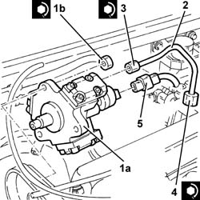
Applies to: engines: 2.4 JTD 10v; all production periods
Connect the fuel inlet pipe to the pressure pump.
Place the fuel return manifold pipe back in its housing and fix it using the bolts.
Connect the fuel return pipe for lubricating the injectors to the manifold pipe.
Connect the electrical connection to the fuel temperature sensor.
Fit the E.G.R. valve and fix it using the nuts.
Connect the battery terminal (-).
1060E30 pressure pump pulley - r r
1008C14 engine link bracket - r r
1016A10 sound-proofing cover - r + r .
1008C10 power unit upper reaction link r r .
1032D12 timing system protective cover(s) - r + r
1092A12 crankshaft pulley - r+r for versions with air conditioner
1092G10 single engine belt r r
7055B64 Engine compartment DUST shield in front wheel arch (one), left or right - R.R.
Applies to: engines: 1.9 JTD 16v; all production periods
Removing
RefittingPosition the vehicle on the ramp
Proceed with removal 1016A10 sound-proofing cover - r + r
Ensure that the ignition key is in the OFF position, then disconnect the negative battery terminal (-).
| Name | Connector |
|---|---|---|
- | Battery |
Proceed with removal 1008C10 power unit upper reaction link r r
Proceed with removal 1060G80 ds electric injection control unit - r r
Proceed with removal 4450B04 right front wheel r r
Proceed with removal 7055B54 under-engine guard - r r
Proceed with removal - 7055B91 Right front WHEEL ARCH LINER - R.R.
Proceed with removal 1092G10 single engine belt r r
Proceed with removal 1092A10 Crankshaft services PULLEY - R.R.
Proceed with removal 1092G20 engine component single belt fixed tensioner - one - r + r
Proceed with removal 1032D12 timing system protective cover(s) - r + r
Proceed with removal 1032B10 toothed timing belt - r + r for timing adjustment or replacement
1. Disconnect the rapid attachment for the fuel return pipe from the fuel filter, return manifold pipe side.
2. Disconnect the rapid attachment for the fuel return pipe to the tank, return manifold pipe side.
3. Loosen the band and disconnect the fuel return pipe from the pressure pump, fuel return manifold pipe side.
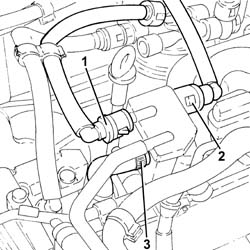
Applies to: engines: 1.9 JTD 16v; all production periods
1. Undo the bolts (1a) and remove the fuel return manifold pipe (1b) complete with the pipe from the injectors to the fuel recovery manifold (1c).
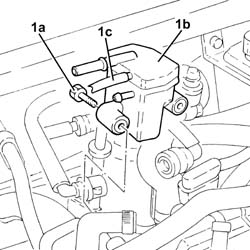
Applies to: engines: 1.9 JTD 16v; all production periods
1. Undo the bolt fixing the guide pipe for the engine oil dipstick to the pressure pump mounting.
2. Disconnect the electrical connection from the fuel pressure regulator.
| Name | Connector |
|---|---|---|
2 | Fuel pressure regulator |
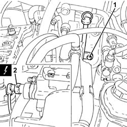
Applies to: engines: 1.9 JTD 16v; all production periods
1. Stop the pressure pump pulley from rotating using two bolts.
2. Undo the pressure pump pulley nut.
Undo the two bolts fitted previously to stop the rotation of the pressure pump pulley.
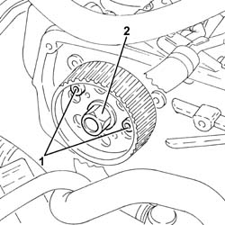
Applies to: engines: 1.9 JTD 16v; all production periods
1. Remove the pressure pump pulley (1a) using the tool (1b).
 | Name | Country |
|---|---|---|
1b | Extractor | 1.860.854.001 |
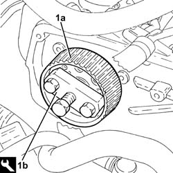
Applies to: engines: 1.9 JTD 16v; all production periods
1. Undo nuts (1a) and remove pressure pump (1b) from its mount.
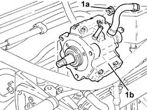
Applies to: engines: 1.9 JTD 16v; all production periods
Refitting
Removing1. Fit the clutch pump (1a) back in its housing and tighten the nuts (1b) to the specified torque.
| Fastening | Component | Ø | Value (daNm) |
|---|---|---|---|---|
1b | Nut | PRESSURE PUMP | M8 | (Support side) 2.3 ÷ 2.8 |
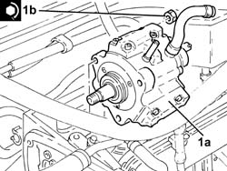
Applies to: engines: 1.9 JTD 16v; all production periods
1. Replace the pressure pump pulley in its housing.
2. Stop the pressure pump pulley from rotating using two bolts.
3. Tighten the pressure pump pulley nut to torque.
| Fastening | Component | Ø | Value (daNm) |
|---|---|---|---|---|
3 | Nut | PRESSURE PUMP CONTROL PULLEY | M14 | 4.5 ÷ 5.5 |
Undo the two bolts fitted previously to stop the rotation of the pressure pump pulley.
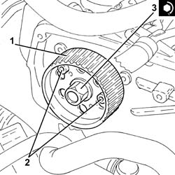
Applies to: engines: 1.9 JTD 16v; all production periods
Connect the electrical connection to the fuel pressure regulator.
Tighten the bolt fixing the engine oil dipstick guide pipe to the pressure pump mounting.
Place the fuel return manifold pipe complete with the pipe from the injectors to the fuel recovery manifold back in its housing and secure it using the bolts.
Connect the fuel return pipe to the pressure pump, fuel return manifold pipe side and tighten the band.
Connect the rapid attachment for the fuel return pipe to the tank, fuel return manifold pipe side.
Connect the rapid attachment for the fuel return pipe from the fuel filter, return manifold pipe side.
Proceed with refitting 1032B10 toothed timing belt - r + r for timing adjustment or replacement
Proceed with refitting 1032D12 timing system protective cover(s) - r + r
Proceed with refitting 1092G20 engine component single belt fixed tensioner - one - r + r
Proceed with refitting 1092A10 Crankshaft services PULLEY - R.R.
Proceed with refitting 1092G10 single engine belt r r
Proceed with refitting - 7055B91 Right front WHEEL ARCH LINER - R.R.
Proceed with refitting 7055B54 under-engine guard - r r
Proceed with refitting 4450B04 right front wheel r r
Proceed with refitting 1060G80 ds electric injection control unit - r r
Proceed with refitting 1008C10 power unit upper reaction link r r
Connect the negative (-) battery terminal
Proceed with refitting 1016A10 sound-proofing cover - r + r
Remove the car from the ramps.
Applies to: engines: 2.4 JTD 20v; all production periods
Removing
RefittingPosition the vehicle on the ramp.
Proceed with removal 4450B04 right front wheel r r .
Proceed with removal 7055B54 under-engine guard - r r .
Proceed with removal - 7055B91 Right front WHEEL ARCH LINER - R.R. .
Proceed with removal - 7055B66 Engine compartment DUST SHIELD protection in right front wheel arch - R.R. .
Proceed with removal 1092G10 single engine belt r r .
Proceed with removal 1092A10 Crankshaft services PULLEY - R.R. .
Proceed with removal 1092G21 engine component single belt fixed tensioner - r rwith belt removed .
Proceed with removal 1016A10 sound-proofing cover - r + r .
Proceed with removal 1008C10 power unit upper reaction link r r .
Proceed with removal 1032D12 timing system protective cover(s) - r + r .
Proceed with removal 1032B10 toothed timing belt - r + r for timing adjustment or replacement .
Proceed with removal 1060E30 pressure pump pulley - r r .
1. Disconnect the rapid attachment for the fuel return pipe from the fuel filter, return manifold pipe side.
2. Disconnect the rapid attachment for the fuel return pipe to the tank, return manifold pipe side.
3. Disconnect the pipe from the injectors to the fuel return manifold pipe, fuel return manifold pipe side.
4. Disconnect the rapid attachment of the supply pipe from the fuel filter to the pressure pump, pressure pump side.
5. Disconnect the front engine coupling.
| Name | Connector |
|---|---|---|
5 | Front/engine connection |
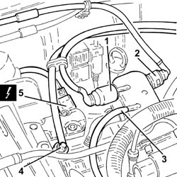
Applies to: engines: 2.4 JTD 20v; all production periods
1. Undo the bolts (1a) and remove the fuel return manifold pipe (1b) after having disconnected the fuel return pipe from the pressure pump (1c) from the latter.
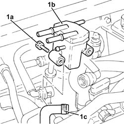
Applies to: engines: 2.4 JTD 20v; all production periods
1. Undo the connectors (1a), (1b) and remove the pipe from the pressure pump to the fuel manifold (1c).
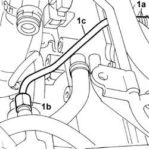
Applies to: engines: 2.4 JTD 20v; all production periods
1. Disconnect the electrical connection from the fuel pressure regulator.
| Name | Connector |
|---|---|---|
1 | Fuel pressure regulator |
2. Undo the nuts (2a) and remove the pressure pump (2b) from its mounting.
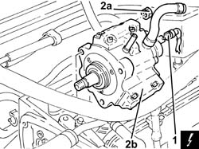
Applies to: engines: 2.4 JTD 20v; all production periods
Refitting
Removing1. Fit the clutch pump (1a) back in its housing and tighten the nuts (1b) to the specified torque.
| Fastening | Component | Ø | Value (daNm) |
|---|---|---|---|---|
1b | Nut | PRESSURE PUMP | M8 | (Support side) 2.3 ÷ 2.8 |
2. Connect the electrical connection to the fuel pressure regulator.
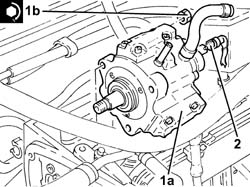
Applies to: engines: 2.4 JTD 20v; all production periods
1. Place the pipe from the pressure pump to the single fuel manifold back in its housing and fix it using the connectors without tightening them.
2. Tighten the connector for the pipe from the pressure pump to the single fuel manifold, pump side, to the recommended torque using a suitable spanner.
| Fastening | Component | Ø | Value (daNm) |
|---|---|---|---|---|
2 | Connector | PRESSURE PUMP LINE TO FUEL MANIFOLD | M14 | (Pressure pump side) 2.3 |
3. Tighten the connector for the pipe from the pressure pump to the single fuel manifold, fuel manifold side, to the recommended torque using a suitable spanner.
| Fastening | Component | Ø | Value (daNm) |
|---|---|---|---|---|
3 | Connector | PRESSURE PUMP LINE TO FUEL MANIFOLD | M14 | (Fuel manifold side) 2.3 |
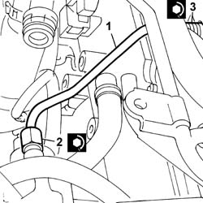
Applies to: engines: 2.4 JTD 20v; all production periods
Connect the fuel return pipe from the pressure pump, fuel return manifold pipe side, then refit the latter in its seating and secure it with the bolts.
Connect the front engine coupling.
Connect the rapid attachment of the supply pipe from fuel filter to pressure pump, pressure pump side.
Connect the pipe from the injectors to the fuel return manifold pipe, fuel return manifold pipe side.
Connect the rapid attachment for the fuel return pipe to the tank, return manifold pipe side.
Connect the rapid attachment for the fuel return pipe from the fuel filter, fuel return manifold pipe side.
Proceed with refitting 1060E30 pressure pump pulley - r r .
Proceed with refitting 1032B10 toothed timing belt - r + r for timing adjustment or replacement .
Proceed with refitting 1032D12 timing system protective cover(s) - r + r .
Proceed with refitting 1008C10 power unit upper reaction link r r .
Proceed with refitting 1016A10 sound-proofing cover - r + r .
Proceed with refitting 1092G21 engine component single belt fixed tensioner - r rwith belt removed .
Proceed with refitting 1092A10 Crankshaft services PULLEY - R.R. .
Proceed with refitting 1092G10 single engine belt r r .
Proceed with refitting - 7055B66 Engine compartment DUST SHIELD protection in right front wheel arch - R.R. .
Proceed with refitting - 7055B91 Right front WHEEL ARCH LINER - R.R. .
Proceed with refitting 7055B54 under-engine guard - r r .
Proceed with refitting 4450B04 right front wheel r r .
Remove the car from the ramps.
Topics linked from this page (28)
- 1008C10 power unit upper reaction link r r
- 1008C14 engine link bracket - r r
- 1016A10 sound-proofing cover - r + r
- 1032B10 toothed timing belt - r + r for timing adjustment or replacement
- 1032B14 toothed timing belt - r + r for timing adjustment or replacement versions with air conditioner
- 1032D12 timing system protective cover(s) - r + r
- 1060E30 pressure pump pulley - r r
- 1060G80 ds electric injection control unit - r r
- 1084A16 oil dip stick pipe - r r
- 1092A10 Crankshaft services PULLEY - R.R.
- 1092A12 crankshaft pulley - r+r for versions with air conditioner
- 1092G10 single engine belt r r
- 1092G20 engine component single belt fixed tensioner - one - r + r
- 1092G21 engine component single belt fixed tensioner - r rwith belt removed
- 4450B04 right front wheel r r
- 4450B10 Front WHEEL (one) - R.R.
- 5530B10 battery - r+r
- 7055B54 under-engine guard - r r
- 7055B64 Engine compartment DUST shield in front wheel arch (one), left or right - R.R.
- A1B Battery ( BATTERY NEGATIVE )
- D4 Front/engine connection
- K47 Timing sensor
- K81 Fuel temperature sensor
- K82 Turbocharging sensor
- L30 EGR solenoid
- N77 Fuel pressure regulator
- O20A Diesel heater resistance ( ENGINE )
- O20B Diesel heater resistance ( ENGINE )
Topics that link to this page (10)
- B10 ENGINE DOES NOT START / UNDER NO CIRCUMSTANCES
- B16 ENGINE STARTS WITH DIFFICULTY'
- B20 ENGINE STARTS, AND CUTS OUT STRAIGHT AWAY
- D04 ENGINE NOT RUNNING SMOOTHLY
- D10 ENGINE IDLE IRREGULAR
- D21 ENGINE CUTS OUT WHILST DRIVING
- X01 EXCESSIVE FUEL CONSUMPTION
- 1060E40 supplementary pressure pump - r r
- 1072B10 inlet manifold - r + r and replace seal
- 1072B50 sleeves connecting air capacity box to inlet manifold is - r+r